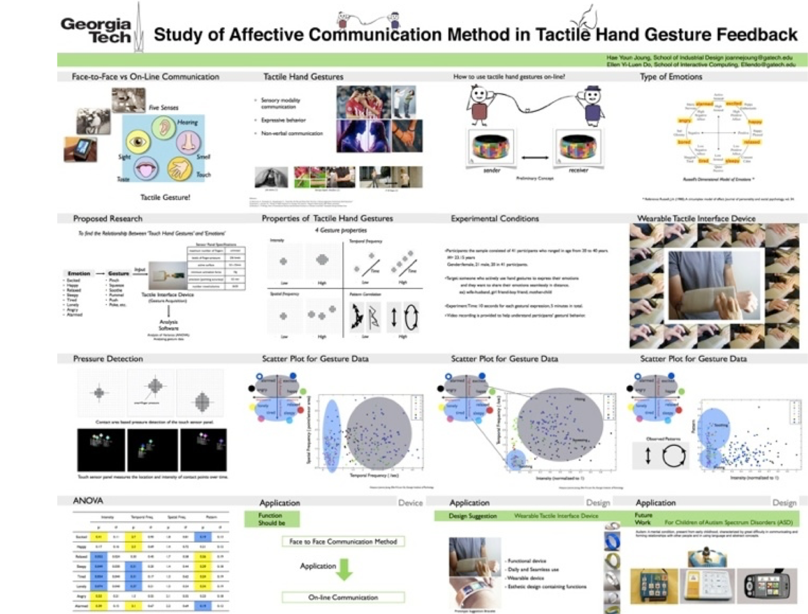
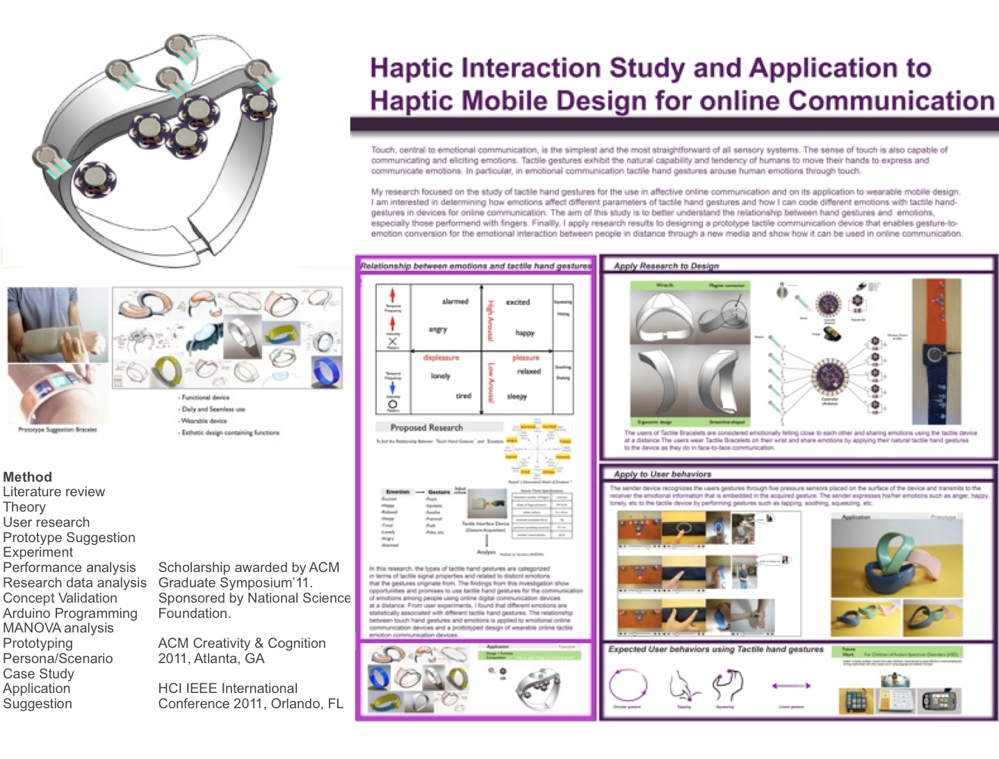

Affective Online Communication

User experience research, experiment, and prototypes
Methods: literature review, user research, market research, persona/scenario, prototype suggestion, experiement, performance analysis, research data analysis, concept valiation, Arduino programming, MANOVA analysis (statistical analysis), prototyping, case study, application, proposal
Thesis Title: Tactile Hand Gesture Recognition through Haptic Feedback for Affective Online Communication Paper download
Study of affective communication method in tactile hand gesture feedback: I am interested in the usability of haptic hand gestures in emotional online communication. To investigate how different emotions are associated with different tactile hand gestures, I built a tactile user interface device to record parameters of hand gestures exerted on it such as the hand gesture intensity, temporal frequency, spatial frequency and pattern correlation to be used as the source of information to access emotions. I observed the behavioral aspects of tactile hand gestures used for emotional interaction through the sensory input device and analyzed the data using a model-based analysis tool. The obtained gestures are categorized into the groups defined by the tactile signal parameters. Based on the findings of this research, I show a possibility that the tactile hand gesture-to-emotion map can be used to enable affective on-line communication.